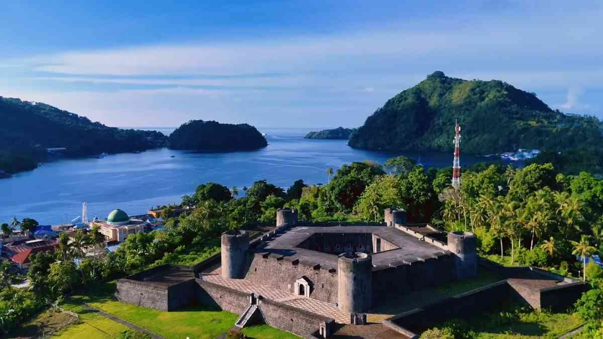

Benteng Belgica merupakan salah satu benteng peninggalan kolonial Belanda paling megah yang berdiri gagah di Pulau Neira, Kepulauan Banda, Maluku Tengah. Bangunan bersejarah ini awal mulanya didirikan oleh bangsa Portugis pada abad ke-16, sebelum akhirnya dibangun kembali secara permanen oleh Gubernur Jenderal VOC Pieter Both pada tahun 1611 guna memperkuat monopoli perdagangan rempah-rempah, khususnya pala.
Jika dilihat dari udara, benteng ini memiliki keunikan arsitektur yang sangat menawan berupa struktur bertingkat dua berbentuk segi lima simetris atau pentagon. Di setiap sudut benteng terdapat menara pengawas yang menyajikan pemandangan indah lanskap Banda Neira, laut lepas, serta kemegahan Gunung Api Banda. Berada di atas bukit seluas 30 meter di atas permukaan laut, posisi strategis ini dahulu dimanfaatkan VOC sebagai pusat pertahanan utama untuk mengawasi lalu lintas kapal dan pergerakan musuh. Saat ini, Benteng Belgica telah ditetapkan sebagai cagar budaya sekaligus destinasi wisata sejarah unggulan di Indonesia. Keberadaannya bukan hanya menjadi saksi bisu kejayaan masa lalu, tetapi juga mengingatkan akan sejarah panjang perebutan rempah-rempah yang pernah mengubah jalan sejarah dunia.

Selain menjadi rebutan bangsa Eropa, Banda Neira juga dipilih menjadi lokasi pengasingan para pemikir dan pejuang kemerdekaan Indonesia seperti Mohammad Hatta, Sutan Sjahrir, dr. Tjipto Mangunkusumo, dan Iwa Kusumasumantri.
Rumah pengasingan Bung Hatta dan Sutan Sjahrir hingga kini dirawat dengan baik sebagai museum sejarah yang menyimpan barang-barang peninggalan mereka selama masa pengasingan (1936–1942).
Di balik masa lalunya yang penuh pergulatan dan berdarah, alam Banda Neira menawarkan kedamaian yang luar biasa. Kepulauan ini dikelilingi oleh laut dalam dengan visibility air yang luar biasa jernih serta keanekaragaman biota laut kelas dunia.